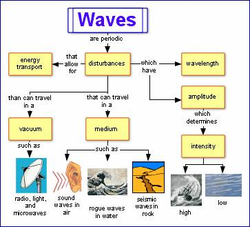

Search the Case Studies
Search the Articles
Search the Membership
Search MirandaNet
MirandaNet Fellowship Casestudy
Membership List | Publications | Research | Specialist Area List | Braided Learning Ejournal
Mapping: What’s it all about?
Christina Preston
Year of posting: 2007
Abstract:
Visual thinking and learning tools such as Mind Mapping and Concept Mapping are making an impact in today’s classrooms. Christina Preston, Founder and Chair of the MirandaNet Fellowship, explains what the concept is, how it is helping students and how ICT is taking it to new levels.
Study
Mapping: What’s it all about?
Visual thinking and learning tools such as Mind Mapping and Concept Mapping are making an impact in today’s classrooms. Christina Preston, Founder and Chair of the MirandaNet Fellowship, explains what the concept is, how it is helping students and how ICT is taking it to new levels.
What is visual learning?
Visual learning is a proven teaching method in which diagrams such as concept maps, mind maps, tree diagrams, organisation charts and spider diagrams are used to help students of all ages think and learn more effectively. They are all used for storing, processing, organising and presenting information graphically. These techniques are used across the curriculum and at all Key Stages in the UK. The most popular are Concept Mapping and Mind Mapping.
What is Concept Mapping?
The Concept Mapping technique was developed by Prof. Joseph D. Novak at Cornell University in the 1960s. Concept maps graphically illustrate relationships between information. In a concept map, two or more concepts are linked by words that describe their relationship.
Concept maps encourage understanding by helping students to organise and enhance their knowledge on any topic. They help students learn new information by integrating each new idea into their existing body of knowledge.
Concept maps are ideal for measuring the growth of student learning. As students create concept maps, they reiterate ideas using their own words. Misdirected links or wrong connections can alert teachers to gaps or misunderstandings in their students’ knowledge. In this way concept mapping provides an accurate, objective way to evaluate particular areas requiring additional explanation to complete students’ understanding.

Concept Map on Waves using Inspiration
What is Mind Mapping?
Mind Mapping® was first coined in the UK by Tony Buzan in his 1974 book and BBC TV programme “Use Your Head”. A mind map is a visual representation of hierarchical information. Students follow a process of building a mind map, to represent an entire concept or an idea with branches of associated thoughts. As with other visual learning techniques, mind maps provide a simplified overview of complex information allowing students to better understand relationships and to find new connections.
Mind maps include a central idea or image surrounded by branches of associated topics or ideas. Subtopics are then added to the branches as ideas flow freely. Typically in a mind map, topic and subtopic text is one to two keywords, to provide a reminder for what the idea is. More information is then detailed in attached notes.
Mind mapping is a commonly used tool for brainstorming and note taking. The process of building a mind map is very fluid and nonlinear, making the expansion of ideas similar to the natural way of thinking. Symbols and images, along with keywords, are used to quickly retain and recall information. Branches are often in different colours to help students to remember the different branches and their associations.

Mind Map of a Newscast using Inspiration
How does Mind Mapping and Concept Mapping support learning?
The use of visual learning techniques, such as mapping, is achieving growing recognition in education. Whether we believe that the mind is organised into left and right-hand sides, or whether it is a less organised structure of various skills, mapping utilises a greater part of the brain, resulting in more effective thinking. Imagination and association are the keys to high-level memory and creative thinking and mapping supports this. With many students being visual or kinaesthetic learners, this approach makes the teaching more enjoyable and effective and the learning more successful and fun. It is an educational win–win that multiplies its benefits over time and with use.
Concept maps and mind maps are quick to review and it is easy to refresh information in the mind just by glancing at one. Remembering the shape and structure of a visual diagram can provide cues necessary to remember the information within it. They engage much more of the brain in the process of assimilation and connecting facts than conventional notes or summaries.
How does ICT take Concept Mapping and Mind Mapping further?
The application of ICT can act as a catalyst for change in teaching and learning. In terms of visual learning, technology takes the student from a 2D paper based map into a multi-layered environment.
With ICT Visual Learning tools:
- Graphics and symbols can be used to highlight the nodes
- Labels that can be attached to the links
- Maps can easily be re-organised in a variety of ways to make the picture clear
- Maps can be hyperlinked to other maps creating a complex multi-layered system for understanding an idea
- Elements within the map can be “hyperlinked” to files, websites and other digital resources
- Multimedia files, such as MP3 and Movie files, could be inserted and played directly from the document
- Cross curricular templates and resources so that teacher and students can get started quickly
ICT also helps to support the development of higher order thinking skills. Inspiration® (Ages 7 to adult) and Kidspiration® (for students age 4-10 years) have been designed specially for the education market, and the latest version of Inspiration includes access to more than one million symbols to help visualise ideas. MirandaNet fellows have been researching how younger children learn to use both language and images to make meaning of the world and also how children source and choose the images to represent their ideas. New multimedia functionality also enables students to insert and play video and sound directly from their maps to enrich projects.
Inspiration features three unique learning environments which mean that students can build their diagrams, concept or mind maps and then transfer them into text outlines. This means that students who may struggle to get their thoughts down in a linear way can pour all their ideas onto the page, reorganise them, link them up and, by transferring to the outline view, have the satisfaction of seeing their ideas made into a structured story or argument. Teachers have commented on how this can raise the self esteem of students who struggle with writing, especially with boys who are initially engaged by the ICT aspect of this way of working but who come out of the process having gained valuable thinking and learning skills. Inspirations Word Guide, dictionary and thesaurus also aid writing and literacy by giving students more scope for expression.
These ICT tools can also enhance the experience for auditory learners. Inspiration and Kidspiration both have audio tools which allow auditory learners to see their ideas visually as well as hearing the words spoken aloud. The listen tool reads aloud any text a student inputs. The record tool allows emerging writers to record their own words and hear it spoken aloud. Last but not least the talking interface will read aloud all program elements to the students, so if a student scrolls over an item anywhere in the program, the voice will say it aloud making Inspiration and Kidspiration great tools for audio and visual learners.
Ultimately, ICT allows you to expand your ideas by visualising connections and concepts, in a way that you cannot on paper. With paper based mapping you can run out of space or find it is frustrating to add ideas or move them around. The functionality of ICT means that the area for expression is expanded so that space issues do not get in the way of the thought process.
The choice between concept mapping and mind mapping is one of personal preference; however what is clear is that ultimately teachers seem to agree that both are powerful thinking skills that can offer benefits to all students. What is also clear is that using ICT to undertake this process has the potential to extend the flexibility and scope of this approach even further.
Inspiration Version 8, launched March 2006, is available through TAG Learning on 01474 357350 or at www.taglearning.co.uk. Alternatively visit www.inspiration.com/ie
About Inspiration Software, Inc.
 Recognised as the leader in visual thinking and learning, Inspiration Software, Inc., develops and publishes innovative software tools that inspire learners of all ages to brainstorm, organise, plan and create. With more than 15 million users worldwide, the company’s award-winning software is revolutionising visual learning in education - inspiring students to develop strong thinking and organisational skills and improve their academic performance. Founded by Donald Helfgott and Mona Westhaver, the company’s mission is to support improvements in education and make a positive difference in students’ lives by providing software tools that help students learn to think. www.inspiration.com/ie
Recognised as the leader in visual thinking and learning, Inspiration Software, Inc., develops and publishes innovative software tools that inspire learners of all ages to brainstorm, organise, plan and create. With more than 15 million users worldwide, the company’s award-winning software is revolutionising visual learning in education - inspiring students to develop strong thinking and organisational skills and improve their academic performance. Founded by Donald Helfgott and Mona Westhaver, the company’s mission is to support improvements in education and make a positive difference in students’ lives by providing software tools that help students learn to think. www.inspiration.com/ie
About TAG Learning Ltd.
 TAG Learning Ltd (“TAG”) was founded 16 years ago by educators and has grown to become a leading publisher and supplier of creative educational software tools, peripherals, and training and support materials for schools in the UK. TAG’s focus is on providing the most appropriate solutions for children, teachers and parents, and as a result, has established itself as the unique and flexible partner for many schools, local authorities, city learning centres, education action zones and educational resellers. In March 2003, the focus and support that TAG provides to educators was rewarded with the prestigious ‘Educational Supplier of the Year’ award, for suppliers with an annual turnover of less than £3 Million. www.taglearning.com
TAG Learning Ltd (“TAG”) was founded 16 years ago by educators and has grown to become a leading publisher and supplier of creative educational software tools, peripherals, and training and support materials for schools in the UK. TAG’s focus is on providing the most appropriate solutions for children, teachers and parents, and as a result, has established itself as the unique and flexible partner for many schools, local authorities, city learning centres, education action zones and educational resellers. In March 2003, the focus and support that TAG provides to educators was rewarded with the prestigious ‘Educational Supplier of the Year’ award, for suppliers with an annual turnover of less than £3 Million. www.taglearning.com
MirandaNet Members can go to the Log on/off area to edit their own casestudies.
[Back]